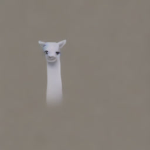
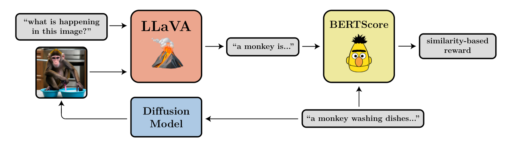
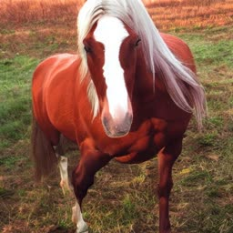
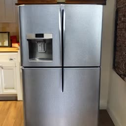
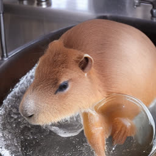
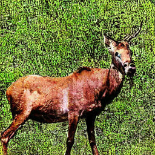
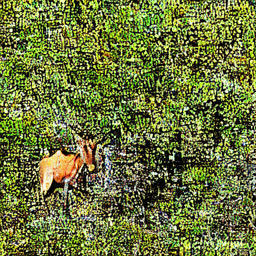
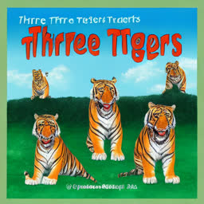
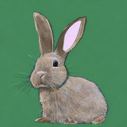
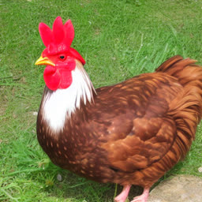

Training Diffusion Models with Reinforcement Learning
Diffusion models are a class of flexible generative models trained with an approximation to the log-likelihood objective. However, most use cases of diffusion models are not concerned with likelihoods, but instead with downstream objectives such as human-perceived image quality or drug effectiveness. In this paper, we investigate reinforcement learning methods for directly optimizing diffusion models for such objectives. We describe how posing denoising as a multi-step decision-making problem enables a class of policy gradient algorithms, which we refer to as denoising diffusion policy optimization (DDPO), that are more effective than alternative reward-weighted likelihood approaches. Empirically, DDPO can adapt text-to-image diffusion models to objectives that are difficult to express via prompting, such as image compressibility, and those derived from human feedback, such as aesthetic quality. Finally, we show that DDPO can improve prompt-image alignment using feedback from a vision-language model without the need for additional data collection or human annotation. The project’s website can be found at http://rl-diffusion.github.io.
Diffusion probabilistic models (Sohl-Dickstein et al., 2015) have recently emerged as the de facto standard for generative modeling in continuous domains. Their flexibility in representing complex, high-dimensional distributions has led to the adoption of diffusion models in applications including image and video synthesis (Ramesh et al., 2021; Saharia et al., 2022; Ho et al., 2022), drug and material design (Xu et al., 2021; Xie et al., 2021; Schneuing et al., 2022), and continuous control (Janner et al., 2022; Wang et al., 2022; Hansen-Estruch et al., 2023). The key idea behind diffusion models is to iteratively transform a simple prior distribution into a target distribution by applying a sequential denoising process. This procedure is conventionally motivated as a maximum likelihood estimation problem, with the objective derived as a variational lower bound on the log-likelihood of the training data.
扩散概率模型（Sohl-Dickstein et al., 2015）近来已成为连续域生成建模的事实标准。它们在表示复杂高维分布上的灵活性，使扩散模型被应用于图像与视频合成（Ramesh et al., 2021; Saharia et al., 2022; Ho et al., 2022）、药物与材料设计（Xu et al., 2021; Xie et al., 2021; Schneuing et al., 2022）以及连续控制（Janner et al., 2022; Wang et al., 2022; Hansen-Estruch et al., 2023）等场景。扩散模型的核心思想是：通过顺序去噪过程，把简单的先验分布逐步转化为目标分布。这一过程通常被表述为极大似然估计问题，其目标推导为训练数据对数似然的变分下界。
However, most use cases of diffusion models are not directly concerned with likelihoods, but instead with downstream objective such as human-perceived image quality or drug effectiveness. In this paper, we consider the problem of training diffusion models to satisfy such objectives directly, as opposed to matching a data distribution. This problem is challenging because exact likelihood computation with diffusion models is intractable, making it difficult to apply many conventional reinforcement learning (RL) algorithms. We instead propose to frame denoising as a multi-step decision-making task, using the exact likelihoods at each denoising step in place of the approximate likelihoods induced by a full denoising process. We present a policy gradient algorithm, which we refer to as denoising diffusion policy optimization (DDPO), that can optimize a diffusion model for downstream tasks using only a black-box reward function.
然而，扩散模型的多数应用场景并不直接关心似然，而是关心下游目标，例如人类感知的图像质量或药物有效性。本文研究如何训练扩散模型以直接满足这类目标，而不是去匹配某个数据分布。这一问题的难点在于：扩散模型的精确似然计算不可行，使得许多常规强化学习（RL）算法难以适用。我们转而把去噪表述为一个多步决策任务，用每一步去噪的精确似然来替代完整去噪过程所导致的近似似然。我们提出一种策略梯度算法——去噪扩散策略优化（denoising diffusion policy optimization, DDPO）——只需一个黑盒奖励函数，就能针对下游任务优化扩散模型。
We apply our algorithm to the finetuning of large text-to-image diffusion models. Our initial evaluation focuses on tasks that are difficult to specify via prompting, such as image compressibility, and those derived from human feedback, such as aesthetic quality. However, because many reward functions of interest are difficult to specify programmatically, finetuning procedures often rely on large-scale human labeling efforts to obtain a reward signal (Ouyang et al., 2022). In the case of text-to-image diffusion, we propose a method for replacing such labeling with feedback from a vision-language model (VLM). Similar to RLAIF finetuning for language models (Bai et al., 2022b), the resulting procedure allows for diffusion models to be adapted to reward functions that would otherwise require additional human annotations. We use this procedure to improve prompt-image alignment for unusual subject-setting compositions.
我们把该算法应用于大型文本到图像扩散模型的微调。最初的评测聚焦于难以通过提示词指定的任务（如图像可压缩性），以及源自人类反馈的任务（如美学质量）。然而，由于许多有意义的奖励函数难以用程序直接定义，微调流程往往依赖大规模人工标注来获得奖励信号（Ouyang et al., 2022）。在文本到图像扩散的场景中，我们提出用视觉语言模型（VLM）的反馈来替代这类标注。与语言模型的 RLAIF 微调（Bai et al., 2022b）类似，这一流程使扩散模型能够适配那些原本需要额外人工标注的奖励函数。我们利用该流程改善了非常规「主体-场景」组合下的提示词-图像对齐。
Our contributions are as follows. We first present the derivation and conceptual motivation of DDPO. We then document the design of various reward functions for text-to-image generation, ranging from simple computations to workflows involving large VLMs, and demonstrate the effectiveness of DDPO compared to alternative reward-weighted likelihood methods in these settings. Finally, we demonstrate the generalization ability of our finetuning procedure to unseen prompts.
我们的贡献如下。首先给出 DDPO 的推导与概念动机；随后记录文本到图像生成中各类奖励函数的设计，从简单计算到涉及大型 VLM 的工作流，并在这些场景中验证 DDPO 相对于奖励加权似然类方法的有效性；最后证明我们的微调流程对未见提示词的泛化能力。

图 1：（面向扩散模型的强化学习）我们提出强化学习算法 DDPO，用于在可压缩性、美学质量以及由视觉语言模型判定的提示词-图像对齐等下游目标上优化扩散模型。每一行展示了同一提示词与随机种子在训练过程中样本的演化。
Diffusion probabilistic models. Denoising diffusion models (Sohl-Dickstein et al., 2015; Ho et al., 2020) have emerged as an effective class of generative models for modalities including images (Ramesh et al., 2021; Saharia et al., 2022), videos (Ho et al., 2022; Singer et al., 2022), 3D shapes (Zhou et al., 2021; Zeng et al., 2022), and robotic trajectories (Janner et al., 2022; Ajay et al., 2022; Chi et al., 2023). While the denoising objective is conventionally derived as an approximation to likelihood, the training of diffusion models typically departs from maximum likelihood in several ways (Ho et al., 2020). Modifying the objective to more strictly optimize likelihood (Nichol & Dhariwal, 2021; Kingma et al., 2021) often leads to worsened image quality, as likelihood is not a faithful proxy for visual quality. In this paper, we show how diffusion models can be optimized directly for downstream objectives.
扩散概率模型。去噪扩散模型（Sohl-Dickstein et al., 2015; Ho et al., 2020）已成为一类有效的生成模型，覆盖图像（Ramesh et al., 2021; Saharia et al., 2022）、视频（Ho et al., 2022; Singer et al., 2022）、三维形状（Zhou et al., 2021; Zeng et al., 2022）与机器人轨迹（Janner et al., 2022; Ajay et al., 2022; Chi et al., 2023）等模态。虽然去噪目标通常推导为似然的近似，扩散模型的训练在若干方面实际上偏离了极大似然（Ho et al., 2020）。把目标改造为更严格地优化似然（Nichol & Dhariwal, 2021; Kingma et al., 2021）往往导致图像质量下降，因为似然并不是视觉质量的忠实代理。本文说明如何让扩散模型直接面向下游目标优化。
Controllable generation with diffusion models. Recent progress in text-to-image diffusion models (Ramesh et al., 2021; Saharia et al., 2022) has enabled fine-grained high-resolution image synthesis. To further improve the controllability and quality of diffusion models, recent approaches have investigated finetuning on limited user-provided data (Ruiz et al., 2022), optimizing text embeddings for new concepts (Gal et al., 2022), composing models (Du et al., 2023; Liu et al., 2022), adapters for additional input constraints (Zhang & Agrawala, 2023), and inference-time techniques such as classifier (Dhariwal & Nichol, 2021) and classifier-free (Ho & Salimans, 2021) guidance.
扩散模型的可控生成。文本到图像扩散模型（Ramesh et al., 2021; Saharia et al., 2022）近来的进展使细粒度高分辨率图像合成成为可能。为进一步提升扩散模型的可控性与质量，近期方法探索了在有限用户数据上微调（Ruiz et al., 2022）、为新概念优化文本嵌入（Gal et al., 2022）、模型组合（Du et al., 2023; Liu et al., 2022）、面向额外输入约束的适配器（Zhang & Agrawala, 2023），以及推理时技术，如分类器引导（Dhariwal & Nichol, 2021）与无分类器引导（Ho & Salimans, 2021）。
Reinforcement learning from human feedback. A number of works have studied using human feedback to optimize models in settings such as simulated robotic control (Christiano et al., 2017), game-playing (Knox & Stone, 2008), machine translation (Nguyen et al., 2017), citation retrieval (Menick et al., 2022), browsing-based question-answering (Nakano et al., 2021), summarization (Stiennon et al., 2020; Ziegler et al., 2019), instruction-following (Ouyang et al., 2022), and alignment with specifications (Bai et al., 2022a). Recently, Lee et al. (2023) studied the alignment of text-to-image diffusion models to human preferences using a method based on reward-weighted likelihood maximization. In our comparisons, their method corresponds to one iteration of the reward-weighted regresion (RWR) method. Our results demonstrate that DDPO significantly outperforms even multiple iterations of weighted likelihood maximization (RWR-style) optimization.
人类反馈强化学习。已有大量工作研究如何在仿真机器人控制（Christiano et al., 2017）、游戏（Knox & Stone, 2008）、机器翻译（Nguyen et al., 2017）、引文检索（Menick et al., 2022）、基于浏览的问答（Nakano et al., 2021）、摘要（Stiennon et al., 2020; Ziegler et al., 2019）、指令跟随（Ouyang et al., 2022）以及与规范对齐（Bai et al., 2022a）等场景中利用人类反馈优化模型。近来，Lee et al. (2023) 用基于奖励加权似然最大化的方法研究了文本到图像扩散模型与人类偏好的对齐。在我们的对比中，该方法对应奖励加权回归（RWR）方法的一次迭代。我们的结果表明，DDPO 显著优于甚至多轮加权似然最大化（RWR 式）优化。
Diffusion models as sequential decision-making processes. Although predating diffusion models, Bachman & Precup (2015) similarly posed data generation as a sequential decision-making problem and used the resulting framework to apply reinforcement learning methods to image generation. More recently, Fan & Lee (2023) introduced a policy gradient method for training diffusion models. However, this paper aimed to improve data distribution matching rather than optimizing downstream objectives, and therefore the only reward function considered was a GAN-like discriminator. In concurrent work to ours, DPOK (Fan et al., 2023) built upon Fan & Lee (2023) and Lee et al. (2023) to better align text-to-image diffusion models to human preferences using a policy gradient algorithm. Like Lee et al. (2023), DPOK only considers a single preference-based reward function (Xu et al., 2023); additionally, their work studies KL-regularization and primarily focuses on training a different diffusion model for each prompt. In contrast, we train on many prompts at once (up to 398) and demonstrate generalization to many more prompts outside of the training set. Furthermore, we study how DDPO can be applied to multiple reward functions beyond those based on human feedback, including how rewards derived automatically from VLMs can improve prompt-image alignment. We provide a direct comparison to DPOK in Appendix C.
扩散模型作为序贯决策过程。Bachman & Precup (2015) 的工作早于扩散模型，但同样把数据生成表述为序贯决策问题，并用该框架把强化学习方法应用于图像生成。更近期地，Fan & Lee (2023) 提出了一种训练扩散模型的策略梯度方法；但该论文旨在改进数据分布匹配，而非优化下游目标，因此唯一考虑的奖励函数是类 GAN 的判别器。与本文同期，DPOK（Fan et al., 2023）在 Fan & Lee (2023) 与 Lee et al. (2023) 的基础上，用策略梯度算法更好地对齐文本到图像扩散模型与人类偏好。与 Lee et al. (2023) 类似，DPOK 只考虑单一的基于偏好的奖励函数（Xu et al., 2023）；此外，他们研究 KL 正则化，并主要关注为每一个提示词训练不同的扩散模型。相比之下，我们同时在多达 398 个提示词上训练，并证明其对训练集之外更多提示词的泛化能力。此外，我们研究了 DDPO 如何应用于人类反馈之外的多种奖励函数，包括如何用自动从 VLM 导出的奖励来改善提示词-图像对齐。我们在附录 C 中给出了与 DPOK 的直接对比。
In this section, we provide a brief background on diffusion models and the RL problem formulation.
本节简要介绍扩散模型与 RL 问题形式化的背景。
In this work, we consider conditional diffusion probabilistic models (Sohl-Dickstein et al., 2015; Ho et al., 2020), which represent a distribution over a dataset of samples and corresponding contexts . The distribution is modeled as the reverse of a Markovian forward process , which iteratively adds noise to the data. Reversing the forward process can be accomplished by training a neural network with the following objective:
本文考虑条件扩散概率模型（Sohl-Dickstein et al., 2015; Ho et al., 2020），它在样本数据集 与相应上下文 上表示分布 。该分布被建模为马尔可夫前向过程 的逆过程，后者迭代地向数据加入噪声。反转前向过程可通过用以下目标训练神经网络 来实现：
| (1) |
where is the posterior mean of the forward process, a weighted average of and . This objective is justified as maximizing a variational lower bound on the log-likelihood of the data (Ho et al., 2020).
其中 是前向过程的后验均值，即 与 的加权平均。该目标的合理性在于它最大化数据对数似然的变分下界（Ho et al., 2020）。
Sampling from a diffusion model begins with drawing a random and following the reverse process to produce a trajectory ending with a sample . The sampling process depends not only on the predictor but also the choice of sampler. Most popular samplers (Ho et al., 2020; Song et al., 2021) use an isotropic Gaussian reverse process with a fixed timestep-dependent variance:
从扩散模型采样时，先随机抽取 ，再沿反向过程 产生轨迹 ，并以样本 结束。采样过程不仅取决于预测器 ，还取决于采样器的选择。最流行的采样器（Ho et al., 2020; Song et al., 2021）采用各向同性高斯反向过程，其方差固定且依赖于时间步：
| (2) |
A Markov decision process (MDP) is a formalization of sequential decision-making problems. An MDP is defined by a tuple , in which is the state space, is the action space, is the distribution of initial states, is the transition kernel, and is the reward function. At each timestep , the agent observes a state , takes an action , receives a reward , and transitions to a new state . An agent acts according to a policy .
马尔可夫决策过程（MDP）是序贯决策问题的形式化表述。MDP 由元组 定义，其中 为状态空间， 为动作空间， 为初始状态分布， 为转移核， 为奖励函数。在每一时间步 ，智能体观测状态 ，执行动作 ，获得奖励 ，并转移到新状态 。智能体依据策略 行动。
As the agent acts in the MDP, it produces trajectories, which are sequences of states and actions . The reinforcement learning (RL) objective is for the agent to maximize , the expected cumulative reward over trajectories sampled from its policy:
智能体在 MDP 中行动会产生轨迹，即状态与动作的序列 。强化学习（RL）的目标是让智能体最大化 ，即在其策略采样出的轨迹上的期望累积奖励：
We now describe how RL algorithms can be used to train diffusion models. We present two classes of methods and show that each corresponds to a different mapping of the denoising process to the MDP framework.
下面说明如何用 RL 算法训练扩散模型。我们给出两类方法，并说明它们各自对应去噪过程到 MDP 框架的不同映射。
We assume a pre-existing diffusion model, which may be pretrained or randomly initialized. Assuming a fixed sampler, the diffusion model induces a sample distribution . The denoising diffusion RL objective is to maximize a reward signal defined on the samples and contexts:
我们假设已存在一个扩散模型，它可以是预训练的，也可以是随机初始化的。在固定采样器的前提下，该扩散模型诱导出样本分布 。去噪扩散 RL 的目标是最大化定义在样本与上下文上的奖励信号 ：
for some context distribution of our choosing.
其中 是我们自行选择的上下文分布。
To optimize with minimal changes to standard diffusion model training, we can use the denoising loss (Equation 1), but with training data and an added weighting that depends on the reward . Lee et al. (2023) describe a single-round version of this procedure for diffusion models, but in general this approach can be performed for multiple rounds of alternating sampling and training, leading to an online RL method. We refer to this general class of algorithms as reward-weighted regression (RWR) (Peters & Schaal, 2007).
为在尽量少改动标准扩散模型训练的前提下优化 ，我们可以使用去噪损失 （式 1），但把训练数据换成 ，并加入一个依赖于奖励 的权重。Lee et al. (2023) 描述了该流程在扩散模型上的单轮版本；一般而言，这一做法可以交替进行多轮采样与训练，从而形成一种在线 RL 方法。我们把这一类算法统称为奖励加权回归（RWR）（Peters & Schaal, 2007）。
A standard weighting scheme uses exponentiated rewards to ensure nonnegativity,
一种标准加权方案使用指数化奖励以保证非负性，
where is an inverse temperature and is a normalization constant. We also consider a simplified weighting scheme that uses binary weights,
其中 为逆温度， 为归一化常数。我们还考虑一种使用二值权重的简化加权方案，
where is a reward threshold determining which samples are used for training. In supervised learning terms, this is equivalent to repeated filtered finetuning on training data coming from the model.
其中 是决定哪些样本用于训练的奖励阈值。用监督学习的术语说，这等价于对来自模型自身的训练数据反复做过滤式微调。
Within the RL formalism, the RWR procedure corresponds to the following one-step MDP:
在 RL 的形式体系内，RWR 流程对应如下单步 MDP：
with a transition kernel that immediately leads to an absorbing termination state. Therefore, maximizing is equivalent to maximizing the RL objective in this MDP.
其转移核 会立即进入一个吸收性的终止状态。因此，在该 MDP 中最大化 等价于最大化 RL 目标 。
From RL literature, weighting a log-likelihood objective by is known to approximately maximize subject to a KL divergence constraint on (Nair et al., 2020). However, (Equation 1) does not involve an exact log-likelihood — it is instead derived as a variational bound on . Therefore, the RWR procedure applied to diffusion model training is not theoretically justified and only optimizes very approximately.
据 RL 文献，用 对对数似然目标加权，已知可在 上施加 KL 散度约束的条件下近似最大化 （Nair et al., 2020）。然而 （式 1）并不包含精确的对数似然——它是作为 的变分界推导出来的。因此，把 RWR 流程用于扩散模型训练在理论上并不成立，只能非常近似地优化 。
RWR relies on an approximate log-likelihood because it ignores the sequential nature of the denoising process, only using the final samples . In this section, we show how the denoising process can be reframed as a multi-step MDP, allowing us to directly optimize using policy gradient estimators. This follows the derivation in Fan & Lee (2023), who prove an equivalence between their method and a policy gradient algorithm where the reward is a GAN-like discriminator. We present a general framework with an arbitrary reward function, motivated by our desire to optimize arbitrary downstream objectives (Section 5). We refer to this class of algorithms as denoising diffusion policy optimization (DDPO) and present two variants based on specific gradient estimators.
RWR 依赖近似对数似然，因为它忽略了去噪过程的序贯性质，只使用最终样本 。本节说明如何把去噪过程重构为多步 MDP，从而可以用策略梯度估计器直接优化 。这一推导沿用 Fan & Lee (2023)，他们证明了其方法与「奖励为类 GAN 判别器」的策略梯度算法之间的等价性。我们给出一个具有任意奖励函数的通用框架，其动机正是我们希望优化任意下游目标（第 5 节）。我们把这一类算法称为去噪扩散策略优化（DDPO），并基于具体的梯度估计器给出两个变体。
Denoising as a multi-step MDP. We map the iterative denoising procedure to the following MDP:
去噪作为多步 MDP。我们把迭代去噪过程映射为如下 MDP：
in which is the Dirac delta distribution with nonzero density only at . Trajectories consist of timesteps, after which leads to a termination state. The cumulative reward of each trajectory is equal to , so maximizing is equivalent to maximizing in this MDP.
其中 是 Dirac delta 分布，仅在 处具有非零密度。轨迹由 个时间步组成，之后 进入终止状态。每条轨迹的累积奖励等于 ，因此在该 MDP 中最大化 等价于最大化 。
The benefit of this formulation is that if we use a standard sampler with parameterized as in Equation 2, the policy becomes an isotropic Gaussian as opposed to the arbitrarily complicated distribution as it is in the RWR formulation. This simplification allows for the evaluation of exact log-likelihoods and their gradients with respect to the diffusion model parameters.
这种形式化的好处在于：若我们使用 按式 2 参数化的标准采样器，策略 就是各向同性高斯，而不像 RWR 形式化中那样是任意复杂的分布 。这一简化使得可以计算精确的对数似然及其关于扩散模型参数的梯度。
Policy gradient estimation. With access to likelihoods and likelihood gradients, we can make direct Monte Carlo estimates of . Like RWR, DDPO alternates collecting denoising trajectories via sampling and updating parameters via gradient descent.
策略梯度估计。有了似然与似然梯度，我们就可以直接对 做蒙特卡洛估计。与 RWR 一样，DDPO 交替进行：通过采样收集去噪轨迹 ，再通过梯度下降更新参数。
The first variant of DDPO, which we call , uses the score function policy gradient estimator, also known as the likelihood ratio method or REINFORCE (Williams, 1992; Mohamed et al., 2020):
DDPO 的第一个变体记作 ，使用得分函数策略梯度估计器，也称为似然比方法或 REINFORCE（Williams, 1992; Mohamed et al., 2020）：
| () |
where the expectation is taken over denoising trajectories generated by the current parameters .
其中期望是在由当前参数 生成的去噪轨迹上取的。
However, this estimator only allows for one step of optimization per round of data collection, as the gradient must be computed using data generated by the current parameters. To perform multiple steps of optimization, we may use an importance sampling estimator (Kakade & Langford, 2002):
然而，该估计器只允许每轮数据采集做一步优化，因为梯度必须用当前参数生成的数据来计算。为执行多步优化，我们可以使用重要性采样估计器（Kakade & Langford, 2002）：
| () |
where the expectation is taken over denoising trajectories generated by the parameters . This estimator becomes inaccurate if deviates too far from , which can be addressed using trust regions (Schulman et al., 2015) to constrain the size of the update. In practice, we implement the trust region via clipping, as in proximal policy optimization (Schulman et al., 2017).
其中期望是在由参数 生成的去噪轨迹上取的。若 偏离 过远，该估计器会变得不准确，可用信任域（Schulman et al., 2015）约束更新幅度来缓解。实践中，我们像近端策略优化（Schulman et al., 2017）那样通过裁剪来实现信任域。
In this work, we evaluate our methods on text-to-image diffusion. Text-to-image diffusion serves as a valuable test environment for reinforcement learning due to the availability of large pretrained models and the versatility of using diverse and visually interesting reward functions. In this section, we outline our selection of reward functions. We study a spectrum of reward functions of varying complexity, ranging from those that are straightforward to specify and evaluate to those that capture the depth of real-world downstream tasks.
本文在文本到图像扩散上评估我们的方法。得益于大量预训练模型可用、以及奖励函数多样且富有视觉趣味，文本到图像扩散是强化学习的一个有价值试验环境。本节概述我们选取的奖励函数。我们研究复杂程度各异的一系列奖励函数，从易于指定与评估的，到体现真实下游任务深度的。
The capabilities of text-to-image diffusion models are limited by the co-occurrences of text and images in their training distribution. For instance, images are rarely captioned with their file size, making it impossible to specify a desired file size via prompting. This limitation makes reward functions based on file size a convenient case study: they are simple to compute, but not controllable through the conventional methods of likelihood maximization and prompt engineering.
文本到图像扩散模型的能力受其训练分布中图文共现关系的限制。例如，图像很少以文件大小作为描述，因此无法通过提示词指定期望的文件大小。这一限制使基于文件大小的奖励函数成为一个便利的案例：它们计算简单，却无法通过似然最大化与提示词工程等常规方法加以控制。
We fix the resolution of diffusion model samples at 512x512, such that the file size is determined solely by the compressibility of the image. We define two tasks based on file size: compressibility, in which the file size of the image after JPEG compression is minimized, and incompressibility, in which the same measure is maximized.
我们把扩散模型样本的分辨率固定为 512x512，使文件大小只由图像的可压缩性决定。基于文件大小我们定义两个任务：可压缩性——最小化 JPEG 压缩后图像的文件大小；不可压缩性——最大化同一指标。
To capture a reward function that would be useful to a human user, we define a task based on perceived aesthetic quality. We use the LAION aesthetics predictor (Schuhmann, 2022), which is trained on 176,000 human image ratings. The predictor is implemented as a linear model on top of CLIP embeddings (Radford et al., 2021). Annotations range between 1 and 10, with the highest-rated images mostly containing artwork. Since the aesthetic quality predictor is trained on human judgments, this task constitutes reinforcement learning from human feedback (Ouyang et al., 2022; Christiano et al., 2017; Ziegler et al., 2019).
为刻画一个对人类用户有用的奖励函数，我们基于感知到的美学质量定义一个任务。我们使用 LAION 美学预测器（Schuhmann, 2022），它在 176,000 条人类图像评分上训练而成。该预测器实现为 CLIP 嵌入（Radford et al., 2021）之上的线性模型，标注分值介于 1 到 10 之间，评分最高的图像多为艺术作品。由于该美学质量预测器是在人类判断上训练的，这一任务构成了人类反馈强化学习（Ouyang et al., 2022; Christiano et al., 2017; Ziegler et al., 2019）。

图 2：（VLM 奖励函数）基于 VLM 的提示词-图像对齐奖励函数示意。LLaVA（Liu et al., 2023）给出生成图像的简短描述；奖励为该描述与原始提示词之间用 BERTScore（Zhang et al., 2020）度量的相似度。
A very general-purpose reward function for training a text-to-image model is prompt-image alignment. However, specifying a reward that captures generic prompt alignment is difficult, conventionally requiring large-scale human labeling efforts. We propose using an existing VLM to replace additional human annotation. This design is inspired by recent work on RLAIF (Bai et al., 2022b), in which language models are improved using feedback from themselves.
训练文本到图像模型时，一个非常通用的奖励函数是提示词-图像对齐。然而，要指定一个能刻画通用提示词对齐的奖励并不容易，传统上需要大规模人工标注。我们提出用现成的 VLM 来替代额外的人工标注。这一设计受到近期 RLAIF 工作（Bai et al., 2022b）的启发——该工作用语言模型自身的反馈来改进语言模型。
We use LLaVA (Liu et al., 2023), a state-of-the-art VLM, to describe an image. The finetuning reward is the BERTScore (Zhang et al., 2020) recall metric, a measure of semantic similarity, using the prompt as the reference sentence and the VLM description as the candidate sentence. Samples that more faithfully include all of the details of the prompt receive higher rewards, to the extent that those visual details are legible to the VLM.
我们使用当前最优的视觉语言模型 LLaVA（Liu et al., 2023）来描述图像。微调奖励取 BERTScore（Zhang et al., 2020）的召回率指标——一种语义相似度度量——以提示词为参考句、以 VLM 描述为候选句。凡是更忠实地包含提示词全部细节的样本会获得更高奖励，前提是这些视觉细节能被 VLM 识别出来。
In Figure 2, we show one simple question: “what is happening in this image?”. While this captures the general task of prompt-image alignment, in principle any question could be used to specify complex or hard-to-define reward functions for a particular use case. One could even employ a language model to automatically generate candidate questions and evaluate responses based on the prompt. This framework provides a flexible interface where the complexity of the reward function is only limited by the capabilities of the vision and language models involved.
图 2 中我们使用了一个简单的问题：“what is happening in this image?”。虽然它已能刻画提示词-图像对齐这一通用任务，但原则上可以用任意问题来为特定用例指定复杂或难以定义的奖励函数。甚至可以用语言模型自动生成候选问题，并根据提示词评估回答。该框架提供了一个灵活的接口，其中奖励函数的复杂度只受所涉及的视觉与语言模型能力的限制。
The purpose of our experiments is to evaluate the effectiveness of RL algorithms for finetuning diffusion models to align with a variety of user-specified objectives. After examining the viability of the general approach, we focus on the following questions:
我们实验的目的是评估 RL 算法在微调扩散模型以对齐各类用户指定目标时的有效性。在检验了总体思路的可行性之后，我们聚焦以下问题：
How do variants of DDPO compare to RWR and to each other?
1. DDPO 的各个变体与 RWR 相比、以及彼此相比表现如何？
Can VLMs allow for optimizing rewards that are difficult to specify manually?
2. VLM 能否让我们优化那些难以人工指定的奖励？
Do the effects of RL finetuning generalize to prompts not seen during finetuning?
3. RL 微调的效果能否泛化到微调时未见过的提示词？
We begin by evaluating all methods on the compressibility, incompressibility, and aesthetic quality tasks, as these tasks isolate the effectiveness of the RL approach from considerations relating to the VLM reward function. We use Stable Diffusion v1.4 (Rombach et al., 2022) as the base model for all experiments. Compressibility and incompressibility prompts are sampled uniformly from all 398 animals in the ImageNet-1000 (Deng et al., 2009) categories. Aesthetic quality prompts are sampled uniformly from a smaller set of 45 common animals.
我们首先在所有方法上评估可压缩性、不可压缩性与美学质量任务，因为这些任务能把 RL 方法的有效性与 VLM 奖励函数相关的因素隔离开来。所有实验均以 Stable Diffusion v1.4（Rombach et al., 2022）为基础模型。可压缩性与不可压缩性的提示词从 ImageNet-1000（Deng et al., 2009）类别中的全部 398 种动物里均匀采样；美学质量的提示词则从 45 种常见动物的较小集合中均匀采样。
Pretrained
预训练

Aesthetic Quality
美学质量
Compressibility
可压缩性
Incompressibility
不可压缩性
图 3：（DDPO 样本）RL 微调在不同奖励函数上效果的定性展示。为最大化美学质量，DDPO 把自然主义图像转化为风格化艺术作品；为最大化可压缩性，它去除背景内容并对前景做平滑；为最大化不可压缩性，它加入高频噪声。
RWR
RWR
图 4：（微调有效性）不同 RL 算法在三个奖励函数上的相对效果。我们发现策略梯度类变体（记作 DDPO）是比两种 RWR 变体更有效的优化器。
As shown qualitatively in Figure 3, DDPO is able to effectively adapt a pretrained model with only the specification of a reward function and without any further data curation. The strategies found to optimize each reward are nontrivial; for example, to maximize LAION-predicted aesthetic quality, DDPO transforms a model that produces naturalistic images into one that produces artistic drawings. To maximize compressibility, DDPO removes backgrounds and applies smoothing to what remains. To maximize incompressibility, DDPO finds artifacts that are difficult for the JPEG compression algorithm to encode, such as high-frequency noise and sharp edges. Samples from RWR are provided in Appendix G for comparison.
如图 3 的定性结果所示，DDPO 只需指定奖励函数、无需任何额外的数据整理，就能有效适配预训练模型。为优化各奖励而找到的策略并不平凡：例如，为最大化 LAION 预测的美学质量，DDPO 把一个生成自然主义图像的模型改造成生成艺术化绘画的模型；为最大化可压缩性，DDPO 去除背景并对保留部分做平滑；为最大化不可压缩性，DDPO 找到了 JPEG 压缩算法难以编码的伪影，例如高频噪声与锐利边缘。RWR 的样本见附录 G 以供比较。
We provide a quantitative comparison of all methods in Figure 4. We plot the attained reward as a function of the number of queries to the reward function, as reward evaluation becomes the limiting factor in many practical applications. DDPO shows a clear advantage over RWR on all tasks, demonstrating that formulating the denoising process as a multi-step MDP and estimating the policy gradient directly is more effective than optimizing a reward-weighted variational bound on log-likelihood. Within the DDPO class, the importance sampling estimator slightly outperforms the score function estimator, likely due to the increased number of optimization steps. Within the RWR class, the performance of weighting schemes is comparable, making the sparse weighting scheme preferable on these tasks due to its simplicity and reduced resource requirements.
图 4 给出了所有方法的定量比较。我们绘制了所获奖励随奖励函数查询次数的变化，因为在许多实际应用中奖励评估会成为瓶颈。DDPO 在所有任务上都明显优于 RWR，说明把去噪过程表述为多步 MDP 并直接估计策略梯度，比优化对数似然的奖励加权变分界更为有效。在 DDPO 类内部，重要性采样估计器略优于得分函数估计器，可能源于优化步数的增加。在 RWR 类内部，两种加权方案性能相当，因此稀疏加权方案因其简单、资源需求更低而在这些任务上更可取。
…riding a bike …playing chess …washing dishes
…riding a bike …playing chess …washing dishes
图 5：（提示词对齐）（左）同一提示词与随机种子在训练过程中样本的演化。图像对提示词的忠实度显著提升。样本还呈现出卡通化风格，我们推测这是因为在预训练分布中，这类提示词更可能以插画而非写实照片的形式出现。（右）提示词对齐的定量改进。每条粗线是某一活动的平均分，细线是若干随机选取的单个提示词的平均分。
We next evaluate the ability of VLMs, in conjunction with DDPO, to automatically improve the image-prompt alignment of the pretrained model without additional human labels. We focus on for this experiment, as we found it to be the most effective algorithm in Section 6.1. The prompts for this task all have the form “a(n) [animal] [activity] ”, where the animal comes from the same list of 45 common animals used in Section 6.1 and the activity is chosen from a list of 3 activities: “riding a bike”, “playing chess”, and “washing dishes”.
接下来我们评估 VLM 与 DDPO 结合、在无需额外人工标签的情况下自动改善预训练模型提示词-图像对齐的能力。本实验聚焦于 ，因为我们在第 6.1 节发现它是最有效的算法。该任务的提示词形式均为“a(n) [animal] [activity]”，其中动物取自第 6.1 节所用 45 种常见动物的同一列表，活动则从 3 个活动中选取：“riding a bike”、“playing chess” 与 “washing dishes”。
The progression of finetuning is depicted in Figure 5. Qualitatively, the samples come to depict the prompts much more faithfully throughout the course of training. This trend is also reflected quantitatively, though is less salient as small changes in BERTScore can correspond to large differences in relevance (Zhang et al., 2020). It is important to note that some of the prompts in the finetuning set, such as “a dolphin riding a bike”, had zero success rate from the pretrained model; if trained in isolation, this prompt would be unlikely to ever improve because there would be no reward signal. It was only via transferrable learning across prompts that these difficult prompts could improve.
微调过程如图 5 所示。定性上看，样本在训练过程中逐渐更忠实地描绘提示词。这一趋势在定量上也成立，只是不那么显著，因为 BERTScore 的微小变化可能对应相关性上的巨大差异（Zhang et al., 2020）。有一点值得注意：微调集里的某些提示词（如“a dolphin riding a bike”）在预训练模型上的成功率为零；如果单独训练，该提示词几乎不可能改善，因为不存在奖励信号。只有借助跨提示词的迁移学习，这些困难提示词才得以改善。
Nearly all of the samples become more cartoon-like or artistic during finetuning. This was not optimized for directly. We hypothesize that this may be a function of the pretraining distribution (one would expect depictions of animals doing everyday activities to be more commonly cartoon-like than photorealistic) or of the reward function (perhaps LLaVA has an easier time recognizing the content of simple cartoon-like images).
微调过程中，几乎所有样本都变得更卡通化或更具艺术性，而这并非我们直接优化的目标。我们推测这可能源于预训练分布（描绘动物做日常活动时，卡通形式应比写实照片更常见），也可能源于奖励函数（也许 LLaVA 更容易识别简单卡通图像的内容）。
Aesthetic Quality (New Animals)
美学质量（新动物）
Aesthetic Quality (Non-Animals)
美学质量（非动物）

Prompt Alignment (New Scenarios)
提示词对齐（新场景）

图 6：（泛化）在有限动物集合上的微调可泛化到新动物以及非动物的日常物品。最右侧两列的提示词分别是“a capybara washing dishes”与“a duck taking an exam”。定量分析见附录 F，更多样本见附录 G。
RL finetuning on large language models has been shown to produce interesting generalization properties; for example, instruction finetuning almost entirely in English has been shown to improve capabilities in other languages (Ouyang et al., 2022). It is difficult to reconcile this phenomenon with our current understanding of generalization; it would a priori seem more likely for finetuning to have an effect only on the finetuning prompt set or distribution. In order to investigate the same phenomenon with diffusion models, Figure 6 shows a set of DDPO-finetuned model samples corresponding to prompts that were not seen during finetuning. In concordance with instruction-following transfer in language modeling, we find that the effects of finetuning do generalize, even with prompt distributions as narrow as 45 animals and 3 activities. We find evidence of generalization to animals outside of the training distribution, to non-animal everyday objects, and in the case of prompt-image alignment, even to novel activities such as “taking an exam”.
在大型语言模型上做 RL 微调已被证明会产生有趣的泛化性质；例如，几乎完全用英语做指令微调，也被证明能提升其他语言上的能力（Ouyang et al., 2022）。这一现象难以与我们当前对泛化的理解相调和：先验地看，微调似乎更可能只影响微调所用的提示词集合或分布。为在扩散模型上考察同一现象，图 6 给出了一组 DDPO 微调模型在微调时未见提示词上的样本。与语言建模中指令跟随的迁移一致，我们发现微调效果确实具有泛化性，即便提示词分布窄到只有 45 种动物与 3 种活动。我们找到了泛化的证据：可泛化到训练分布之外的动物、到非动物的日常物品；在提示词-图像对齐的情形下，甚至可泛化到“taking an exam”这类全新活动。
We presented an RL-based framework for training denoising diffusion models to directly optimize a variety of reward functions. By posing the iterative denoising procedure as a multi-step decision-making problem, we were able to design a class of policy gradient algorithms that are highly effective at training diffusion models. We found that DDPO was an effective optimizer for tasks that are difficult to specify via prompts, such as image compressibility, and difficult to evaluate programmatically, such as semantic alignment with prompts. To provide an automated way to derive rewards, we also proposed a method for using VLMs to provide feedback on the quality of generated images. While our evaluation considers a variety of prompts, the full range of images in our experiments was constrained (e.g., animals performing activities). Future iterations could expand both the questions posed to the VLM, possibly using language models to propose relevant questions based on the prompt, as well as the diversity of the prompt distribution. We also chose not to study the problem of overoptimization, a common issue with RL finetuning in which the model diverges too far from the original distribution to be useful (see Appendix A); we highlight this as an important area for future work. We hope that this work will provide a step toward more targeted training of large generative models, where optimization via RL can produce models that are effective at achieving user-specified goals rather than simply matching an entire data distribution.
我们提出了一个基于 RL 的框架，用于训练去噪扩散模型以直接优化多种奖励函数。通过把迭代去噪过程表述为多步决策问题，我们得以设计出一类在训练扩散模型上极为有效的策略梯度算法。我们发现，DDPO 对难以通过提示词指定的任务（如图像可压缩性）以及难以用程序评估的任务（如与提示词的语义对齐）都是有效的优化器。为提供自动导出奖励的途径，我们还提出了一种用 VLM 对生成图像质量给出反馈的方法。虽然我们的评测涵盖了多样的提示词，但实验中图像的总体范围仍然受限（例如都是动物做活动）。后续工作可以扩展向 VLM 提出的问题——例如用语言模型根据提示词提出相关问题——以及提示词分布的多样性。我们也选择不去研究过度优化问题，这是 RL 微调中常见的现象，即模型偏离原始分布过远而失去实用性（见附录 A）；我们把这一点列为未来工作的重要方向。我们希望本工作能推动大型生成模型走向更有针对性的训练：通过 RL 优化得到的模型，能够高效达成用户指定的目标，而不只是去匹配整个数据分布。
Broader Impacts. Generative models can be valuable productivity aids, but may also pose harm when used for disinformation, impersonation, or phishing. Our work aims to make diffusion models more useful by enabling them to optimize user-specified objectives. This adaptation has beneficial applications, such as the generation of more understandable educational material, but may also be used maliciously, in ways that we do not outline here. Work on the reliable detection of synthetic content remains important to mitigate such harms from generative models.
更广泛的影响。生成模型可以成为有价值的生产力工具，但在用于虚假信息、冒充或网络钓鱼时也可能带来危害。我们的工作通过使扩散模型能够优化用户指定的目标，让它们变得更有用。这种适配有有益的应用，例如生成更易懂的教育材料，但也可能被恶意使用，其方式我们不在此列举。关于合成内容可靠检测的研究，对于缓解生成模型的这类危害仍然重要。
This work was partially supported by the Office of Naval Research and computational resource donations from Google via the TPU Research Cloud (TRC). Michael Janner was supported by a fellowship from the Open Philanthropy Project. Yilun Du and Kevin Black were supported by fellowships from the National Science Foundation.
本工作部分由美国海军研究办公室（Office of Naval Research）资助，并获得 Google 通过 TPU Research Cloud（TRC）捐赠的计算资源。Michael Janner 由 Open Philanthropy Project 的奖学金支持。Yilun Du 与 Kevin Black 由国家科学基金会的奖学金支持。
We used the following open-source libraries for this work: NumPy (Harris et al., 2020), JAX (Bradbury et al., 2018), Flax (Heek et al., 2023), optax (Babuschkin et al., 2020), h5py (Collette, 2013), transformers (Wolf et al., 2020), and diffusers (von Platen et al., 2022).
本工作使用了以下开源库：NumPy（Harris et al., 2020）、JAX（Bradbury et al., 2018）、Flax（Heek et al., 2023）、optax（Babuschkin et al., 2020）、h5py（Collette, 2013）、transformers（Wolf et al., 2020）与 diffusers（von Platen et al., 2022）。
  
图 7：（奖励模型过度优化）RL 过度优化奖励函数的示例。（左）在优化不可压缩性时，扩散模型最终丧失全部可辨识的语义内容，只生成噪声。（右）在针对形式为「 animals」的提示词优化时，扩散模型用排版攻击（Goh et al., 2021）利用了 VLM：它写出被解读为指定数字 的文字，而不是生成正确数量的动物。
Section 6.1 highlights the optimization problem: given a reward function, how well can an RL algorithm maximize that reward? However, finetuning on a reward function, especially a learned one, has been observed to lead to reward overoptimization or exploitation (Gao et al., 2022) in which the model achieves high reward while moving too far away from the pretraining distribution to be useful.
第 6.1 节强调的是优化问题：给定一个奖励函数，RL 算法能把它最大化到什么程度？然而，在奖励函数（尤其是学习得到的奖励函数）上做微调，已被观察到会导致奖励过度优化或利用（Gao et al., 2022）——模型获得了很高的奖励，却偏离预训练分布太远而失去用处。
Our setting is no exception, and we provide two examples of reward exploitation in Figure 7. When optimizing the incompressibility objective, the model eventually stops producing semantically meaningful content, degenerating into high-frequency noise. Similarly, we observed that LLaVA is susceptible to typographic attacks (Goh et al., 2021). When optimizing for alignment with respect to prompts of the form “ animals”, DDPO exploited deficiencies in the VLM by instead generating text loosely resembling the specified number: for example, “sixx ttutttas” above a picture of eight turtles.
我们的设定也不例外，图 7 给出了两个奖励利用的例子。在优化不可压缩性目标时，模型最终停止生成有语义的内容，退化为高频噪声。类似地，我们观察到 LLaVA 容易受到排版攻击（Goh et al., 2021）的影响：在针对「 animals」形式的提示词优化对齐时，DDPO 通过生成与指定数字大致相似的文字来利用 VLM 的缺陷——例如在八只海龟的图片上方写出“sixx ttutttas”。
There is currently no general-purpose method for preventing overoptimization. One common strategy is to add a KL-regularization term to the reward (Ouyang et al., 2022; Stiennon et al., 2020); we refer the reader to the concurrent work of Fan et al. (2023) for a study of KL-regularization in the context of finetuning text-to-image diffusion models. However, Gao et al. (2022) suggest that existing solutions, including KL-regularization, may be empirically equivalent to early stopping. As a result, in this work, we manually identified the last checkpoint before a model began to deteriorate for each method and used that as the reference for qualitative results. We highlight this problem as an important area for future work.
目前尚无防止过度优化的通用方法。一种常见策略是在奖励中加入 KL 正则化项（Ouyang et al., 2022; Stiennon et al., 2020）；关于 KL 正则化在文本到图像扩散模型微调中的研究，我们建议读者参考同期的 Fan et al. (2023)。然而，Gao et al. (2022) 指出，包括 KL 正则化在内的现有方案在经验上可能与早停等价。因此在本文中，我们为每种方法人工确定模型开始退化之前的最后一个检查点，并以该检查点作为定性结果的参照。我们把这一问题列为未来工作的重要方向。
| Method | Aesthetic Score |
|---|---|
| Base model | 5.95 0.03 |
| Universal guidance | 6.14 0.05 |
| @ 20k reward queries | 6.63 0.03 |
表 1：DDPO 与通用引导在使用 LAION 美学预测器时的比较。我们报告提示词“wolf”在 50 个样本上的均值与一个标准误。
Classifier guidance (Dhariwal & Nichol, 2021) was originally introduced as a way to improve sample quality for conditional generation using the gradients from an image classifier. For a differentiable reward function such as the LAION aesthetics predictor (Schuhmann, 2022), one could naturally imagine an extension to classifier guidance that uses gradients from such a predictor to improve aesthetic score. The issue is that classifier guidance uses gradients with respect to the noisy images in the intermediate stages of the denoising process, which requires retraining the guidance network on noisy images. Universal guidance (Bansal et al., 2023) sidesteps this issue by applying the guidance network to the fully denoised image predicted by the diffusion model at each step.
分类器引导（Dhariwal & Nichol, 2021）最初被提出，是为了利用图像分类器的梯度来改善条件生成的样本质量。对于 LAION 美学预测器（Schuhmann, 2022）这类可微的奖励函数，人们自然会设想把它扩展为分类器引导：用该预测器的梯度来提升美学分数。问题在于，分类器引导使用的是相对于去噪过程中间阶段带噪图像的梯度，这需要在带噪图像上重新训练引导网络。通用引导（Bansal et al., 2023）则绕开了这一问题：它在每一步把引导网络作用于扩散模型预测的完全去噪图像。
We compare DDPO with universal guidance in Table 1. We used the official implementation of universal guidance11 1 https://github.com/arpitbansal297/Universal-Guided-Diffusion with the recommended hyperparameters for style transfer, substituting the guidance network with the LAION aesthetics predictor. While universal guidance is able to produce a statistically significant improvement in aesthetic score, the change is small compared to DDPO. We only report results averaged over 50 samples for a single prompt, since universal guidance is very slow; on an NVIDIA A100 GPU, it takes almost 2 minutes to generate a single image, whereas standard generation (e.g., from a DDPO-finetuned model) takes 4 seconds.
我们在表 1 中比较 DDPO 与通用引导。我们使用通用引导的官方实现11 1 https://github.com/arpitbansal297/Universal-Guided-Diffusion，并采用其风格迁移的推荐超参数，只把引导网络替换为 LAION 美学预测器。通用引导虽能在美学分数上取得统计显著的改善，但相比 DDPO 变化很小。我们只报告单个提示词在 50 个样本上的平均结果，因为通用引导非常慢：在 NVIDIA A100 GPU 上生成一张图像耗时近 2 分钟，而标准生成（例如用 DDPO 微调后的模型）只需 4 秒。
Here we directly compare our implementation of DDPO to the results reported in the DPOK paper (Fan et al., 2023), which was developed concurrently with this work. The key similarities and differences between our experimental setups are summarized below:
这里我们把自己的 DDPO 实现与 DPOK 论文（Fan et al., 2023）报告的结果直接比较，该工作与本文同期开展。我们实验设置的异同概述如下：
For this experiment only, we use Stable Diffusion v1-5 as the base model and train the UNet with low-rank adaptation (LoRA; Hu et al. (2021)) in order to match DPOK.
• 仅在本实验中，我们使用 Stable Diffusion v1-5 作为基础模型，并用低秩适配（LoRA; Hu et al. (2021)）训练 UNet，以与 DPOK 保持一致。
Rather than matching the hyperparameters in DPOK, we use the same hyperparameters as in our other experiments (Appendix D.5) except for the learning rate which we increase to 3e-4. We found that when using LoRA, a higher learning rate is necessary to get comparable performance to full finetuning.
• 我们没有照搬 DPOK 的超参数，而是沿用其他实验中的超参数（附录 D.5），只把学习率提高到 3e-4。我们发现，使用 LoRA 时需要更高的学习率才能达到与全量微调相当的性能。
Like DPOK, we train on four prompts: “a green colored rabbit” (color), “four wolves in the park” (count), “a dog and a cat” (composition), and “a dog on the moon” (location). Unlike DPOK, we train a single model for all four prompts.
• 与 DPOK 相同，我们在四个提示词上训练：“a green colored rabbit”（颜色）、“four wolves in the park”（计数）、“a dog and a cat”（构图）与 “a dog on the moon”（位置）。与 DPOK 不同的是，我们为全部四个提示词训练同一个模型。
Like DPOK, we train the model using ImageReward (Xu et al., 2023) as the reward function. We evaluate the model using ImageReward and the LAION aesthetics predictor (Schuhmann, 2022).
• 与 DPOK 相同，我们用 ImageReward（Xu et al., 2023）作为奖励函数训练模型，并用 ImageReward 与 LAION 美学预测器（Schuhmann, 2022）评估模型。
Unlike DPOK, we do not employ KL regularization.
• 与 DPOK 不同，我们不使用 KL 正则化。
图 8： 与 DPOK 的比较。DPOK 的数值直接取自其论文，该论文只报告训练中某一个时间点（20k 次奖励查询后）的分数。与 DPOK 相同，分数是每个提示词在 50 个样本上的平均。
The results are presented in Figure 8. Our implementation of outperforms DPOK accross the board, without using KL regularization. Figure 8 also doubles as a quantitative study of overoptimization (Appendix A), since the model is trained with one reward function (ImageReward) and evaluated with another (LAION aesthetic score). We find that significant overoptimization does begin to happen within 25k reward queries for one of the prompts (count: “four wolves in the park”), which is reflected by a drop in LAION aesthetic score. However, the overoptimization is not severe or unreasonably fast. We provide qualitative samples in Figure 9 showing that the model is able to produce high-quality images at 20k reward queries.
结果如图 8 所示。我们的 实现在不使用 KL 正则化的情况下全面优于 DPOK。图 8 同时也相当于一项关于过度优化的定量研究（附录 A），因为模型用一个奖励函数（ImageReward）训练，却用另一个（LAION 美学分数）评估。我们发现，在其中某个提示词（计数：“four wolves in the park”）上，显著的过度优化在 25k 次奖励查询之内就开始出现，表现为 LAION 美学分数的下降。不过，这种过度优化既不严重，速度也不算异常快。图 9 给出了定性样本，显示模型在 20k 次奖励查询时已能生成高质量图像。
Color
颜色

Count
计数
Composition
构图
Location
位置
图 9：在 DPOK 提示词上用 ImageReward 训练结果的定性示例：“a green colored rabbit”（颜色）、“four wolves in the park”（计数）、“a dog and a cat”（构图）与 “a dog on the moon”（位置）。微调后的图像来自训练了 20k 次奖励查询的模型。
For all experiments, we use Stable Diffusion v1.4 (Rombach et al., 2022) as the base model and finetune only the UNet weights while keeping the text encoder and autoencoder weights frozen.
所有实验中，我们都以 Stable Diffusion v1.4（Rombach et al., 2022）为基础模型，只微调 UNet 权重，保持文本编码器与自编码器权重冻结。
We collect 256 samples per training iteration. For , we accumulate gradients across all 256 samples and perform one gradient update. For , we split the samples into 4 minibatches and perform 4 gradient updates. Gradients are always accumulated across all denoising timesteps for a single sample. For , we use the same clipped surrogate objective as in proximal policy optimization (Schulman et al., 2017), but find that we need to use a very small clip range compared to standard RL tasks. We use a clip range of 1e-4 for all experiments.
每轮训练迭代我们采集 256 个样本。对 ，我们在全部 256 个样本上累积梯度并执行一次梯度更新；对 ，我们把样本分为 4 个小批量并执行 4 次梯度更新。对单个样本，梯度始终在所有去噪时间步上累积。对 ，我们使用与近端策略优化（Schulman et al., 2017）相同的裁剪代理目标，但发现相对于标准 RL 任务，需要使用非常小的裁剪范围。所有实验中我们使用 1e-4 的裁剪范围。
We compute the weights for a training iteration using the entire dataset of samples collected for that training iteration. For , the weights are computed using the softmax function. For , we use a percentile-based threshold, meaning is dynamically selected such that the bottom % of a given pool of samples are discarded and the rest are used for training.
我们用该轮训练迭代采集到的全部样本数据集来计算权重。对 ，权重用 softmax 函数计算；对 ，我们使用基于百分位的阈值，即动态选择 ，使给定样本池中底部 % 的样本被丢弃，其余用于训练。
In practice, rewards are rarely used as-is, but instead are normalized to have zero mean and unit variance. Furthermore, this normalization can depend on the current state; in the policy gradient context, this is analogous to a value function baseline (Sutton et al., 1999), and in the RWR context, this is analogous to advantage-weighted regression (Peng et al., 2019). In our experiments, we normalize the rewards on a per-context basis. For DDPO, this is implemented as normalization by a running mean and standard deviation that is tracked for each prompt independently. For RWR, this is implemented by computing the softmax over rewards for each prompt independently. For , this is implemented by computing the percentile-based threshold for each prompt independently.
实践中，奖励很少直接使用，而是被归一化为零均值、单位方差。此外，这种归一化可以依赖于当前状态：在策略梯度语境下，这类似于值函数基线（Sutton et al., 1999）；在 RWR 语境下，这类似于优势加权回归（Peng et al., 2019）。在我们的实验中，我们按上下文对奖励做归一化。对 DDPO，这通过为每个提示词独立维护的滑动均值与标准差来实现；对 RWR，这通过对每个提示词独立计算奖励上的 softmax 来实现；对 ，这通过为每个提示词独立计算基于百分位的阈值 来实现。
RWR experiments were conducted on a v3-128 TPU pod, and took approximately 4 hours to reach 50k samples. DDPO experiments were conducted on a v4-64 TPU pod, and took approximately 4 hours to reach 50k samples. For the VLM-based reward function, LLaVA inference was conducted on a DGX machine with 8 80Gb A100 GPUs.
RWR 实验在 v3-128 TPU pod 上进行，达到 50k 样本约需 4 小时。DDPO 实验在 v4-64 TPU pod 上进行，达到 50k 样本约需 4 小时。基于 VLM 的奖励函数中，LLaVA 推理在配备 8 张 80Gb A100 GPU 的 DGX 机器上进行。
| RWR | |||||
| Diffusion | Denoising steps () | 50 | 50 | 50 | 50 |
| Guidance weight () | 5.0 | 5.0 | 5.0 | 5.0 | |
| Optimization | Optimizer | AdamW | AdamW | AdamW | AdamW |
| Learning rate | 1e-5 | 1e-5 | 1e-5 | 1e-5 | |
| Weight decay | 1e-4 | 1e-4 | 1e-4 | 1e-4 | |
| 0.9 | 0.9 | 0.9 | 0.9 | ||
| 0.999 | 0.999 | 0.999 | 0.999 | ||
| 1e-8 | 1e-8 | 1e-8 | 1e-8 | ||
| Gradient clip norm | 1.0 | 1.0 | 1.0 | 1.0 | |
| RWR | Inverse temperature () | - | - | 0.2 | - |
| Percentile | - | - | - | 0.9 | |
| Batch size | - | - | 128 | 128 | |
| Gradient updates per iteration | - | - | 400 | 400 | |
| Samples per iteration | - | - | 10k | 10k | |
| DDPO | Batch size | 64 | 256 | - | - |
| Samples per iteration | 256 | 256 | - | - | |
| Gradient updates per iteration | 4 | 1 | - | - | |
| Clip range | 1e-4 | - | - | - |
This list was used for experiments with the aesthetic quality reward function and the VLM-based reward function.
该列表用于美学质量奖励函数与基于 VLM 的奖励函数的实验。
| cat | dog | horse | monkey | rabbit | zebra | spider | bird | sheep |
| deer | cow | goat | lion | tiger | bear | raccoon | fox | wolf |
| lizard | beetle | ant | butterfly | fish | shark | whale | dolphin | squirrel |
| mouse | rat | snake | turtle | frog | chicken | duck | goose | bee |
| pig | turkey | fly | llama | camel | bat | gorilla | hedgehog | kangaroo |
Recent text-to-image diffusion models rely critically on classifier-free guidance (CFG) (Ho & Salimans, 2021) to produce perceptually high-quality results. CFG involves jointly training the diffusion model on conditional and unconditional objectives by randomly masking out the context during training. The conditional and unconditional predictions are then mixed at sampling time using a guidance weight :
近期的文本到图像扩散模型严重依赖无分类器引导（CFG）（Ho & Salimans, 2021）来产生感知质量高的结果。CFG 的做法是在训练时随机屏蔽上下文 ，让扩散模型在条件与无条件目标上联合训练；随后在采样时用引导权重 把条件与无条件的预测混合：
| (3) |
where is the -prediction parameterization of the diffusion model (Ho et al., 2020) and is the guided -prediction that is used to compute the next denoised sample.
其中 是扩散模型（Ho et al., 2020）的 预测参数化， 是用于计算下一个去噪样本的、经过引导的 预测。
For reinforcement learning, it does not make sense to train on the unconditional objective since the reward may depend on the context. However, we found that when only training on the conditional objective, performance rapidly deteriorated after the first round of finetuning. We hypothesized that this is due to the guidance weight becoming miscalibrated each time the model is updated, leading to degraded samples, which in turn impair the next round of finetuning, and so on. Our solution was to choose a fixed guidance weight and use the guided -prediction during training as well as sampling. We call this procedure CFG training. Figure 10 shows the effect of CFG training on ; it has no effect after a single round of finetuning, but becomes essential for subsequent rounds.
对强化学习而言，在无条件目标上训练没有意义，因为奖励可能依赖于上下文。然而我们发现，只在条件目标上训练时，性能在第一轮微调后就迅速退化。我们推测原因在于：每次模型更新后引导权重都会失准，导致样本质量下降，进而损害下一轮微调，如此循环。我们的解决办法是固定一个引导权重，并在训练与采样时都使用经过引导的 预测。我们称这一流程为 CFG 训练。图 10 展示了 CFG 训练对 的影响：单轮微调后它没有作用，但对后续轮次变得必不可少。
with CFG training without CFG training
使用 CFG 训练 不使用 CFG 训练
图 10：（CFG 训练）我们分别运行 算法，一种只优化条件 预测（不使用 CFG 训练），另一种优化经过引导的 预测（使用 CFG 训练）。每个点代表一次扩散模型更新。我们发现，对于需要多轮交替采样与训练的方法，CFG 训练是必不可少的。
There are two main differences between DDPO and RWR, as compared in Section 6.1: the objective (DDPO uses the policy gradient) and the data distribution (DDPO is significantly more on-policy, collecting 256 samples per iteration as opposed to 10,000 for RWR). This choice is motivated by standard RL practice, in which policy gradient methods specifically require on-policy data (Sutton et al., 1999), whereas RWR is designed to work in on off-policy data (Nair et al., 2020) and is known to underperform other algorithms in more online settings (Duan et al., 2016).
如第 6.1 节所比较的，DDPO 与 RWR 之间有两处主要差异：目标（DDPO 使用策略梯度）与数据分布（DDPO 明显更同策略，每轮迭代采集 256 个样本，而 RWR 为 10,000 个）。这一选择源于标准 RL 实践：策略梯度方法特别需要同策略数据（Sutton et al., 1999），而 RWR 被设计用于异策略数据（Nair et al., 2020），且已知在更在线的设定下表现不如其他算法（Duan et al., 2016）。
However, we can isolate the effect of the data distribution by varying how interleaved the sampling and training are in RWR. At one extreme is a single-round algorithm (Lee et al., 2023), in which samples are collected from the pretrained model and used for finetuning. It is also possible to run rounds of finetuning each on samples collected from the most up-to-date model. In Figure 11, we evaluate this hyperparameter and find that increased interleaving does help up to a point, after which it causes performance degradation. However, RWR is still unable to match the asymptotic performance of DDPO at any level of interleaving.
不过，我们可以通过改变 RWR 中采样与训练的交替程度来隔离数据分布的影响。一个极端是单轮算法（Lee et al., 2023）：从预训练模型采集 个样本用于微调。也可以运行 轮微调，每轮使用从最新模型采集的 个样本。图 11 评估了这一超参数，发现增加交替程度在一定范围内有帮助，超过之后会导致性能退化。然而，无论交替程度如何，RWR 都无法达到 DDPO 的渐近性能。
图 11：（RWR 交替消融）对 RWR 每轮迭代采集样本数量的消融。每轮迭代的梯度更新次数始终保持不变。我们发现更频繁的交替在一定程度内有益，之后会导致性能退化。然而，无论交替程度如何，RWR 都无法达到 DDPO 的渐近性能。
In Section 6.3, we presented qualitative evidence of both the aesthetic quality model and the image-prompt alignment model generalizing to prompts that were unseen during finetuning. In Figure 12, we provide an additional quantitative analysis of generalization with the aesthetic quality model, where we measure the average reward throughout training for several prompt distributions. In accordance with the qualitative evidence, we see that the model generalizes very well to unseen animals, and everyday objects to a lesser degree.
在第 6.3 节中，我们给出了美学质量模型与提示词-图像对齐模型都能泛化到微调时未见提示词的定性证据。图 12 给出了美学质量模型泛化性的补充定量分析，我们测量了若干提示词分布在训练过程中的平均奖励。与定性证据一致，我们看到模型对未见动物泛化得很好，对日常物品的泛化则稍弱。
图 12：（定量泛化）奖励曲线展示了美学质量目标对微调时未见提示词的泛化能力。微调提示词是 45 种常见动物的列表，“unseen animals” 是额外 38 种动物的列表，“ordinary objects” 是 50 种物品（如 toaster、chair、coffee cup 等）的列表。
Figure 13 shows qualitative samples from the baseline RWR method. Figure 14 shows more samples on seen prompts from DDPO finetuning with the image-prompt alignment reward function. Figure 15 shows more examples of generalization to unseen animals and everyday objects with the aesthetic quality reward function. Figure 16 shows more examples of generalization to unseen subjects and activities with the image-prompt alignment reward function.
图 13 给出了基线 RWR 方法的定性样本。图 14 给出了用提示词-图像对齐奖励函数做 DDPO 微调时在已见提示词上的更多样本。图 15 给出了用美学质量奖励函数泛化到未见动物与日常物品的更多示例。图 16 给出了用提示词-图像对齐奖励函数泛化到未见主体与活动的更多示例。
Pretrained
预训练

Aesthetic Quality
美学质量
Compressibility
可压缩性
Incompressibility
不可压缩性
图 13：（RWR 样本）
图 14：（更多提示词-图像对齐样本）
Pretrained (New Animals)
预训练（新动物）
Aesthetic Quality (New Animals)
美学质量（新动物）
Pretrained (Non-Animals)
预训练（非动物）
Aesthetic Quality (Non-Animals)
美学质量（非动物）
图 15：（美学质量泛化）
图 16：（提示词-图像对齐泛化）